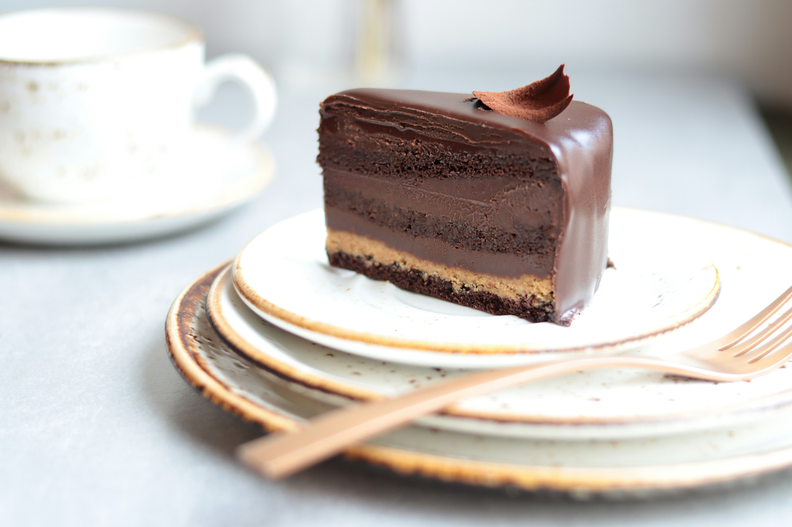

Chocolate Mousse Recipe

Description
Chocolate mousse is a timeless classic among French desserts.
Ingredients
- 200g dark Chocolate (50% to 70% cocoa)
- 6 ultra-fresh eggs
- 1 pinch of salt
Instructions
- Melt the chocolate in a double boiler (bain-marie) or in the microwave at low power.
Let it cool until warm.
- Separate the egg whites from the yolks.
- Stir the yolks one by one into the melted chocolate, mixing vigorously.
- Whip the egg whites with a pinch of salt until stiff peaks form.
- Gently fold 1/3 of the whites into the chocolate mixture to loosen it, then fold in the rest
gently using a spatula, lifting from the bottom to keep the airiness.
- Pour into ramekins and refrigerate for at least 3 hours (ideally overnight)
Odin Recipes